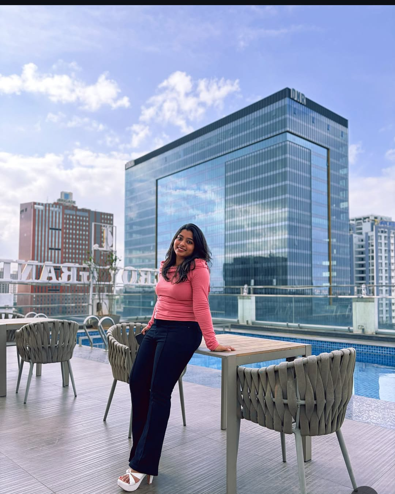
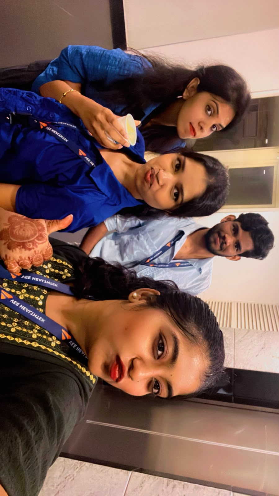
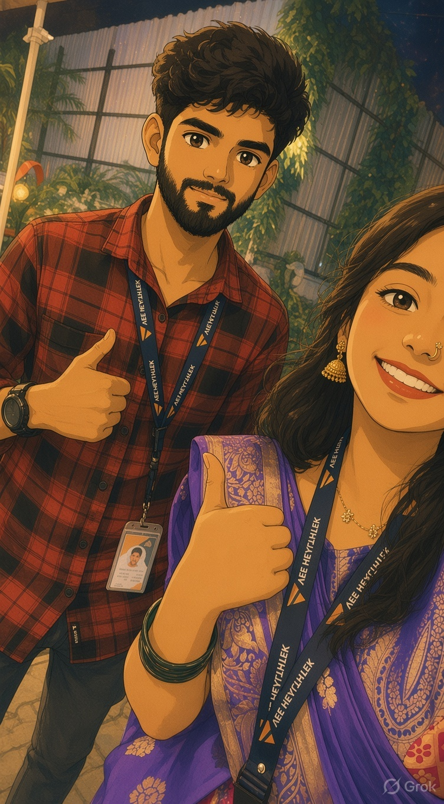

A pink little gallery for her portraits, favorite pictures, and moments you want to keep.

The one that makes me smileA little photo, a lovely feeling. ♡Her beautiful energySome moments deserve their own frame.Softest little memoryA favorite to look back on.Pretty in every wayJust being herself is more than enough.A little sunshineOne of those pictures that feels warm.One for the heartKeep a special caption here.

Another favoriteEvery photo has its own little story.

Just because, ♡Some pictures don't need a reason.
A little reminderEvery memory has its own meaning.
Photo privacy tip: use pictures you both feel comfortable sharing, especially if the website will be public.